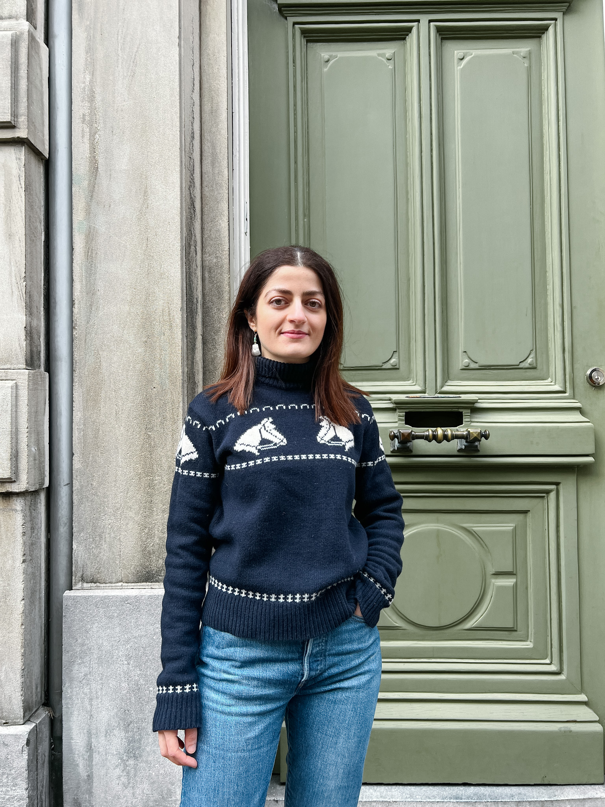

Oula Osman Abou

Data Scientist and AI Specialist
I am an enthusiastic and driven student who's looking for an opportunity in the field of Machine Learning and Big Data to challenge myself into applying the skills I am honing in real life problems.
I am eager to collaborate with experienced professionals in a dynamic work environment to build my skills and knowledge in this rapidly evolving field.
Education
-
MSc Data Science and AI
Eindhoven University of Technology, The Netherlads
September 2021-present
Major tracks: Machine Learning and Artificial Intelligence
-
BSc Data Science
Eindhoven University of Technology and Tilburg University, The Netherlads
September 2018-July 2021
Major tracks: Computer Science Essentials and Data Modelling
-
BA English Language and Literature
University of Aleppo, Syria
September 2008-November 2012
Work Experience
-
Student Assistant, TU Eindhoven, The Netherlands
October 2018 - Present,
- Working Student at the ICT support department
- Promotional team member for department of Computer Science and Applied Mathematics
- Student mentorship with first year student
- Tutorship: Process Mining, Databases and Data Modelling, and Algorithmic Aspects of Data Analysis
-
Developer- Summer Internship, Ingy, The Nertherlands
August 2022- September 2022
- Experienced work as a Software engineer in an agile software development project
- Provided support in developing the API for Ingy Network
-
Data Scientist, AnalyzeData, The Netherlads
July 2020 - September 2020,
- Conduction of process modelling and analysis
- Cleaning, analysing, and visualising process data
Languages
- Arabic: Native Proficiency
- English: Full Professional Proficiency
- Dutch: Professional Working Proficiency
Skills
- Python: 🌟🌟🌟🌟
- SQL: 🌟🌟🌟🌟
- Data Visualisation:🌟🌟🌟🌟
- PyTorch: 🌟🌟🌟
- R & R-Studio: 🌟🌟🌟
- JavaScript: 🌟🌟🌟
- HTML: 🌟🌟🌟
Interests
About Me
Contact Me